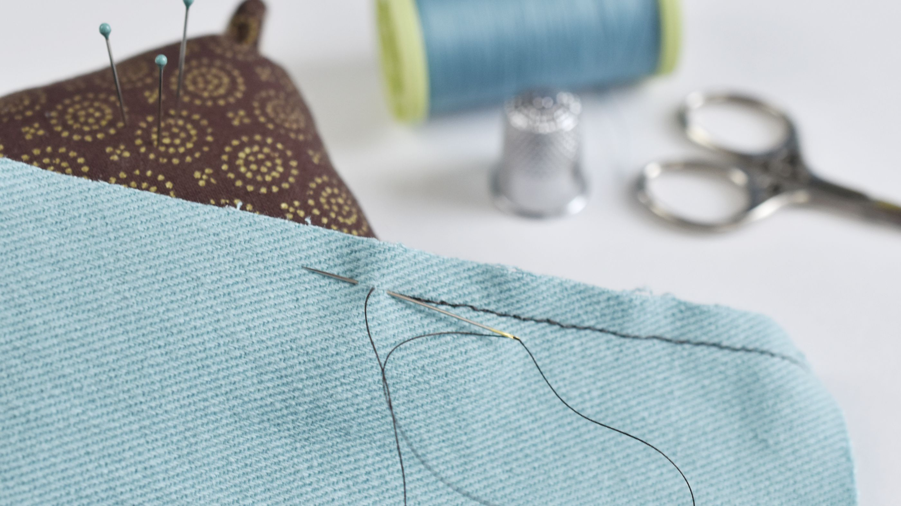

Hand Sewing 101
Have you ever wanted to learn how to sew but you don’t have access to a sewing machine? Are you curious about the process of mending a hole in your pants or hemming your skirt? Within this training you will learn several introductory hand-sewing techniques with a variety of simple hand-sewing tools and materials as well as how to upcycle and mend clothes you already have access to!
It is important to note that Hand Sewing Needles, Seam Rippers, Fabric Scissors, and Straight Pins are SHARP tools, even if they do not feel it. You should always follow appropriate blade safety (putting the blade away while not actively cutting, cutting away from you, using a cutting mat, etc) while using them.
Threading a sewing needle can sometimes be an incredbly challenging task. But, there are some tips and tricks that can help make it less frustrating. For example, place a white background behind the needle to make it easier to see the eye and thread. Be sure to Cut the thread with a pair of sharp fabric scissors (to prevent frayed ends) at a 45-degree angle. Be sure to stiffen the thread using water, saliva, or wax. If you still have difficulty, use a needle threader tool or tweezers. .
This is a very simple stitch. It is used to join fabric in the seams. Also used for gathering fabric. It is made up of a straight line of stitches of equal length. Also used in embroidery as an outlining and filling stitch. .
01 Anchor the knot in the inside of the fabric in the area you will be sewing a line of running stitches.
02 If sewing layers of fabric, align the edges.
03 Pin in place if desired.
04 Place the needle through the fabric and bring it back up to the top side from the bottom side of the fabric, weaving the needle in and out of the fabric.
05 Repeat until the desired area is sewn.
06 Anchor the thread on the inside of the seam or seam allowance and trim the thread.
Backstitches are a very strong hand stitch. If you do not know anything, learn this; you can sew anything. .
01 Bring your needle
up through the
backside of the
fabric pulling taut
to be sure the
knotted thread does
not come through
02 Scoop up a bit of
the fabric
horizontally to
create a small
stitch
03 Then bring your
needle out of the
fabric and
re-insertert it at
the front of the
previous stitch
04 Then scoop up
another equidistant
piece of fabric and
repeat the process